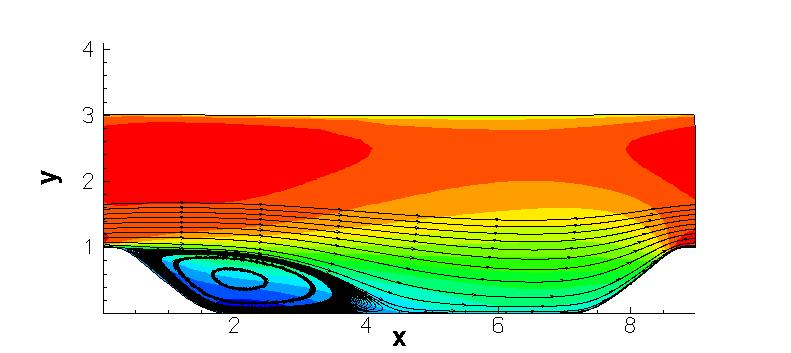

|
Public Access (formerly Langley Research Center)Turbulence Modeling Resource |
LES: 2-D Periodic Hill
Return to: Data from LES - Intro Page
Return to: Turbulence Modeling Resource Home PageThe data on this page were provided by L. Temmerman, Y. Bentaleb, and M. Leschziner.
This LES case is for 2-D separating flow over periodic hills.
This is a similar case to that computed using DNS with a compressible code, documented on the page:
DNS: 2-D Compressible Periodic Hill; however this LES is at a higher Reynolds number.
The LES was run using an incompressible code, and has been documented in several publications:
A subset of this LES data is also available on the
ERCOFTAC Database Classic Collection, Case 81.

Some relevant information is given here, but the
interested reader is referred to the above publications (or ERCOFTAC website) for complete details:
Long-time averaged LES data are provided below (on a grid
normalized to hill height h=1).
These results are from a grid with approximately 4.7 million grid cells, covering a spanwise extent of 4.5 h with 186 cells in the
spanwise direction.
Additional details about the LES grid and methodology can be found in the above
references.
Note:
related experimental data and different LES and DNS results for the 2-D hill are available from the
ERCOFTAC Knowledge Base Wiki,
case number UFR3-30.
Auxiliary postprocessed information (not part of the original LES data set
from Temmerman et al):
Return to: Data from LES - Intro Page
Page Curators: Christopher Rumsey,
Ethan Vogel,
Clark Pederson
Last Updated: 11/05/2021